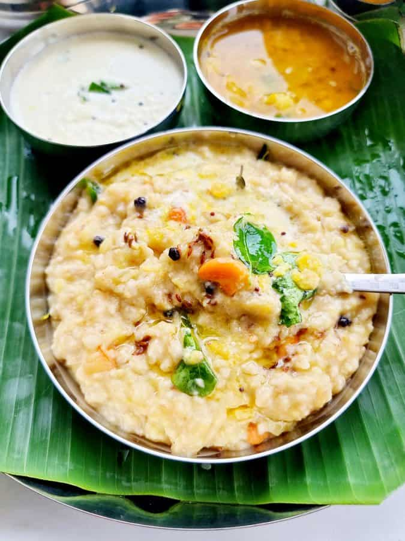

Pongal is a comforting South Indian rice porridge cooked with moong dal and flavored with spices. It's often enjoyed for breakfast or as a light meal, perfect with coconut chutney and sambar.
Ingredients
- 1 cup Rice
- 1/4 cup Moong Dal
- 1/2 tsp Black Pepper
- 1/2 tsp Cumin Seeds
- 1 tbsp Ghee
- 1/2 cup Chopped Cashews
- 1/4 cup Chopped Ginger
- Salt to taste
- Water (as needed)
Step-by-Step Instructions
- Dry roast the moong dal in a pan until golden brown. Set aside.
- In the same pan, heat ghee and add cumin seeds, black pepper, and chopped ginger. Sauté for a minute.
- Add the rice, roasted moong dal, and water. Cook until the rice and dal are soft and the mixture is creamy.
- Stir in the cashews and salt. Cook for another 5 minutes.
- Serve hot with coconut chutney and sambar.